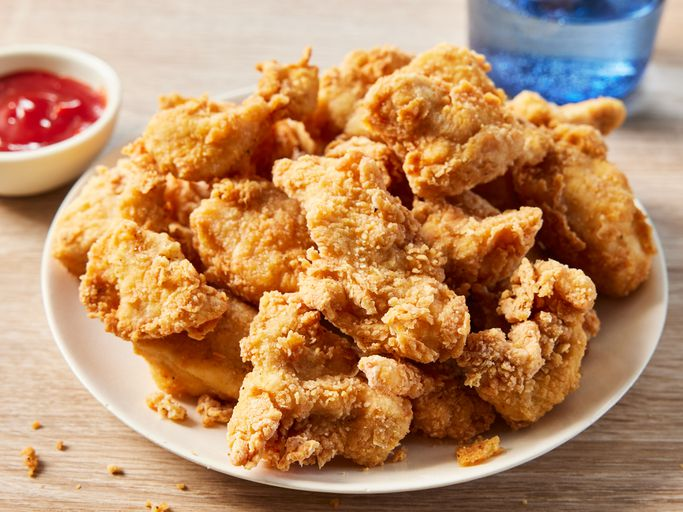

Home
Source
Chicken Nuggets

This fried chicken nuggets recipe has been in our family for years. The only problem is that there's never enough. It's great for parties, too.
Ingredients:
- 8 skinless, boneless chicken breast halves - cut into small chunks
- 4 large eggs, beaten
- 3 tablespoons ground black pepper
- 6 tablespoons garlic salt
- 4 cups all-purpose flour
- Vegetable oil for frying
Steps:
- Gather all ingredients. Heat 1 inch oil in a large skillet or saucepan to 350 degrees F (175 degrees C).

- Stir together flour, garlic salt, and pepper in a bowl. Dip chicken pieces into beaten eggs, then press each piece into flour mixture to coat well; shake off excess flour. Place coated chicken pieces onto a plate.

- Working in batches, fry chicken in hot oil until golden brown and no longer pink in the center.

- An instant-read thermometer inserted into the center should read at least 165 degrees F (74 degrees C). Serve and enjoy!